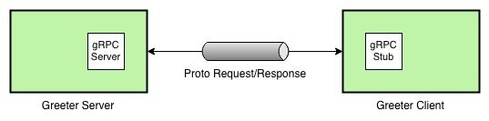
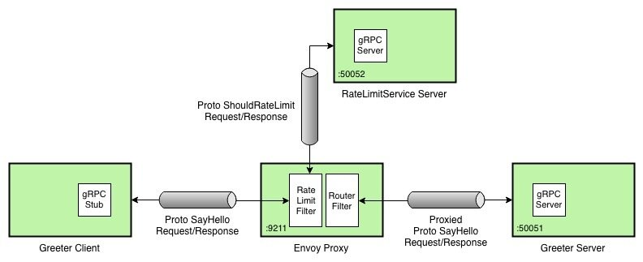

本文为翻译文章，点击查看原文。
Envoy是专为Cloud Native应用设计的轻量级服务代理，也是为数不多的支持gRPC的代理之一。gRPC是一个基于HTTP/2的高性能RPC（远程过程调用）框架，支持多种语言。
在这篇文章中，我们将使用gRPC和Protocol Buffers构建C++语言版本的Greeter应用，使用Go语言构建另一个gRPC应用，实现Envoy的RateLimitService接口。最后，将Envoy部署为Greeter应用的代理，使用我们的速率限制服务实现反压机制（backpressure）。
gRPC Greeter应用
我们首先安装gRPC和Protobuf，然后构建C++语言版本的Greeter应用。您还可以通过选择文档中列出的其他语言来构建此应用程序; 但是，我将在本文中使用C++。
以下是Greeter应用的示意图。

运行Greeter应用时，终端中会有以下输出：
$ ./greeter_server
Server listening on 0.0.0.0:50051
$ ./greeter_client
Greeter received: Hello world
升级gRPC Greeter应用
现在，我们通过使用带有请求计数前缀的返回值替代静态的“Hello”前缀，来增强Greeter应用。只需更新greeter_server.cc文件，如下所示。
// Logic and data behind the server's behavior.
class GreeterServiceImpl final : public Greeter::Service {
+ int counter = 0;
Status SayHello(ServerContext* context, const HelloRequest* request,
HelloReply* reply) override {
- std::string prefix("Hello ");
+ std::string prefix(std::to_string(++counter) + " ");
reply->set_message(prefix + request->name());
return Status::OK;
}
然后重新构建和运行greeter_server，通过greeter_client发送请求时你就能看到如下输出。
$ for i in {1..3}; do ./greeter_client; sleep 1; done
Greeter received: 1 world
Greeter received: 2 world
Greeter received: 3 world
简单速率限制服务
接下来，我们通过扩展Envoy的RateLimitService原型接口，用Go语言实现一个简单的速率限制服务。为此，我们创建一个名为rate-limit-service的Go项目，并引入Envoy的go-control-plane和其它相关依赖。go-control-plane项目为Envoy原型提供了Go语言绑定。为了后续实现速率限制服务，我们还需创建cmd/server/main.go和cmd/client/main.go两个文件。
$ mkdir -p $GOPATH/src/github.com/venilnoronha/rate-limit-service/
$ cd $GOPATH/src/github.com/venilnoronha/rate-limit-service/
$ mkdir -p cmd/server/ && touch cmd/server/main.go
$ mkdir cmd/client/ && touch cmd/client/main.go
引入了所有依赖之后，你将获得一个如下所示的项目结构。注意我只突出列出了这个实验相关的包。
── rate-limit-service
├── cmd
│ ├── client
│ │ └── main.go
│ └── server
│ └── main.go
└── vendor
├── github.com
│ ├── envoyproxy
│ │ ├── data-plane-api
│ │ └── go-control-plane
│ ├── gogo
│ │ ├── googleapis
│ │ └── protobuf
│ └── lyft
│ └── protoc-gen-validate
└── google.golang.org
├── genproto
└── grpc
速率限制服务端
现在，我们创建一个简单的gRPC速率限制服务，来限制每秒的请求数（译者注：例子实现是交替限制请求）。
package main
import (
"log"
"net"
"golang.org/x/net/context"
"google.golang.org/grpc"
"google.golang.org/grpc/reflection"
rls "github.com/envoyproxy/go-control-plane/envoy/service/ratelimit/v2"
)
// server is used to implement rls.RateLimitService
type server struct{
// limit specifies if the next request is to be rate limited
limit bool
}
func (s *server) ShouldRateLimit(ctx context.Context,
request *rls.RateLimitRequest) (*rls.RateLimitResponse, error) {
log.Printf("request: %v\n", request)
// logic to rate limit every second request
var overallCode rls.RateLimitResponse_Code
if s.limit {
overallCode = rls.RateLimitResponse_OVER_LIMIT
s.limit = false
} else {
overallCode = rls.RateLimitResponse_OK
s.limit = true
}
response := &rls.RateLimitResponse{OverallCode: overallCode}
log.Printf("response: %v\n", response)
return response, nil
}
func main() {
// create a TCP listener on port 50052
lis, err := net.Listen("tcp", ":50052")
if err != nil {
log.Fatalf("failed to listen: %v", err)
}
log.Printf("listening on %s", lis.Addr())
// create a gRPC server and register the RateLimitService server
s := grpc.NewServer()
rls.RegisterRateLimitServiceServer(s, &server{limit: false})
reflection.Register(s)
if err := s.Serve(lis); err != nil {
log.Fatalf("failed to serve: %v", err)
}
}
启动RateLimitService服务之后，终端输出如下。
$ go run cmd/server/main.go
2018/10/27 00:35:28 listening on [::]:50052
速率限制客户端
我们同样创建一个RateLimitService的客户端来验证服务端的行为。
package main
import (
"log"
"time"
"golang.org/x/net/context"
"google.golang.org/grpc"
rls "github.com/envoyproxy/go-control-plane/envoy/service/ratelimit/v2"
)
func main() {
// Set up a connection to the server
conn, err := grpc.Dial("localhost:50052", grpc.WithInsecure())
if err != nil {
log.Fatalf("could not connect: %v", err)
}
defer conn.Close()
c := rls.NewRateLimitServiceClient(conn)
// Send a request to the server
ctx, cancel := context.WithTimeout(context.Background(), time.Second)
defer cancel()
r, err := c.ShouldRateLimit(ctx, &rls.RateLimitRequest{Domain: "envoy"})
if err != nil {
log.Fatalf("could not call service: %v", err)
}
log.Printf("response: %v", r)
}
现在让我们通过启动客户端来测试服务端/客户端的交互。
$ for i in {1..4}; do go run cmd/client/main.go; sleep 1; done
2018/10/27 17:32:23 response: overall_code:OK
2018/10/27 17:32:25 response: overall_code:OVER_LIMIT
2018/10/27 17:32:26 response: overall_code:OK
2018/10/27 17:32:28 response: overall_code:OVER_LIMIT
服务端的相关日志。
2018/10/27 17:32:23 request: domain:"envoy"
2018/10/27 17:32:23 response: overall_code:OK
2018/10/27 17:32:25 request: domain:"envoy"
2018/10/27 17:32:25 response: overall_code:OVER_LIMIT
2018/10/27 17:32:26 request: domain:"envoy"
2018/10/27 17:32:26 response: overall_code:OK
2018/10/27 17:32:28 request: domain:"envoy"
2018/10/27 17:32:28 response: overall_code:OVER_LIMIT
Envoy代理
现在我们引入Envoy代理，它将来自Greeter客户端的请求路由到Greeter服务端，同时使用我们的速率限制服务检查速率。下图描述了我们最终的部署结构。

代理配置
我们使用如下Envoy配置来注册Greeter和RateLimitService服务并启用限速检查。注意，由于我们是将Envoy部署在Docker for Mac上，本地部署的服务是通过docker.for.mac.localhost地址引用的。
static_resources:
listeners:
- address:
socket_address:
address: 0.0.0.0
port_value: 9211 # expose proxy on port 9211
filter_chains:
- filters:
- name: envoy.http_connection_manager
config:
codec_type: auto
stat_prefix: ingress_http
access_log: # configure logging
name: envoy.file_access_log
config:
path: /dev/stdout
route_config:
name: greeter_route # configure the greeter service routes
virtual_hosts:
- name: service
domains:
- "*"
routes:
- match:
prefix: "/"
grpc: {}
route:
cluster: greeter_service
rate_limits: # enable rate limit checks for the greeter service
actions:
- destination_cluster: {}
http_filters:
- name: envoy.rate_limit # enable the Rate Limit filter
config:
domain: envoy
- name: envoy.router # enable the Router filter
config: {}
clusters:
- name: greeter_service # register the Greeter server
connect_timeout: 1s
type: strict_dns
lb_policy: round_robin
http2_protocol_options: {} # enable H2 protocol
hosts:
- socket_address:
address: docker.for.mac.localhost
port_value: 50051
- name: rate_limit_service # register the RateLimitService server
connect_timeout: 1s
type: strict_dns
lb_policy: round_robin
http2_protocol_options: {} # enable H2 protocol
hosts:
- socket_address:
address: docker.for.mac.localhost
port_value: 50052
rate_limit_service: # define the global rate limit service
use_data_plane_proto: true
grpc_service:
envoy_grpc:
cluster_name: rate_limit_service
部署Envoy代理
为了部署Envoy代理，我们将上述配置拷贝到envoy.yaml文件。然后我们使用如下的Dockerfile构建Docker镜像。
FROM envoyproxy/envoy:latest
COPY envoy.yaml /etc/envoy/envoy.yaml
使用如下命令构建镜像：
$ docker build -t envoy:grpc .
Sending build context to Docker daemon 74.75kB
Step 1/2 : FROM envoyproxy/envoy:latest
---> 51fc619e4dc5
Step 2/2 : COPY envoy.yaml /etc/envoy/envoy.yaml
---> c766ba3d7d09
Successfully built c766ba3d7d09
Successfully tagged envoy:grpc
然后运行代理：
$ docker run -p 9211:9211 envoy:grpc
...
[2018-10-28 02:59:20.469][000008][info][main] [source/server/server.cc:456] starting main dispatch loop
[2018-10-28 02:59:20.553][000008][info][upstream] [source/common/upstream/cluster_manager_impl.cc:135] cm init: all clusters initialized
[2018-10-28 02:59:20.554][000008][info][main] [source/server/server.cc:425] all clusters initialized. initializing init manager
[2018-10-28 02:59:20.554][000008][info][config] [source/server/listener_manager_impl.cc:908] all dependencies initialized. starting workers
更新Greeter客户端
由于要使用Envoy路由Greeter客户端的请求，我们将客户端代码中的服务端端口从50051改为9211，并重新build。
GreeterClient greeter(grpc::CreateChannel(
- "localhost:50051", grpc::InsecureChannelCredentials()));
+ "localhost:9211", grpc::InsecureChannelCredentials()));
std::string user("world");
std::string reply = greeter.SayHello(user);
最终测试
此时，我们已经有了Greeter服务端、RateLimitService服务和一个Envoy代理，是时候验证整个部署了。为此，我们使用更新后的Greeter客户端发送几个如下所示的请求（译者注：前面Greeter服务端没有停，counter已经到了3）。
$ for i in {1..10}; do ./greeter_client; sleep 1; done
Greeter received: 4 world
14:
Greeter received: RPC failed
Greeter received: 5 world
14:
Greeter received: RPC failed
Greeter received: 6 world
14:
Greeter received: RPC failed
Greeter received: 7 world
14:
Greeter received: RPC failed
Greeter received: 8 world
14:
Greeter received: RPC failed
如你所见，10个请求中的5个是成功的，交替出现gRPC状态码为14的RPC failed失败请求。这表明速率限制服务按照设计限制了请求，Envoy正确地终止了之后的请求。
结论
这篇文章让你对如何使用Envoy作为应用代理有了一个高层次的认识，也能帮助你理解Envoy的限速过滤器如何跟gRPC协议协同工作。